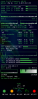
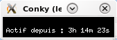
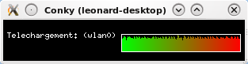
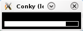

Conky permet de surveiller presque tous les paramètres systèmes, de la température du disque dur à la vitesse des ventilateurs en passant par la charge de la batterie. Mais ce n'est pas simplement un logiciel du style "Everest", il est bien plus que ça. Notamment en permettant un intégration sur le bureau, l'affichage de graphiques, la personnalisation du style et de toutes les variables que vous pourriez avoir envie d'afficher.
En plus de cela, Conky est personnalisable à souhait ! Voici d'ailleurs certains Conky que l'on peut trouver sur la toile :
Conky est une alternative légère et pratique à d'autres programmes plus globaux tels que SuperKaramba pour KDE ou gDesklets pour Gnome. Il présente selon moi l'avantage d'être plus aisément configurable que ces derniers. Si vous souhaitez en savoir plus sur SuperKaramba ou gDesklets, rendez-vous sur la doc :
Maintenant que Conky est installé, il est nécessaire de lui dire ce qu'il doit afficher et comment il doit l'afficher.
Pour cela, il est nécessaire de créer un fichier nommé ".conkyrc" dans votre dossier utilisateur. Pour ce faire, rien de plus simple, ouvrez votre bloc-notes préféré (par exemple Kate :p ) et créez un fichier appellé ".conkyrc" dans /home/utilisateur ("utilisateur" étant bien entendu votre nom d'utilisateur).
Ce fichier sera composé de deux parties. La première indiquant tous les paramètres de style de Conky et la seconde comprenant tout ce que Conky doit afficher. Ces deux parties seront simplement séparées par le mot "TEXT".
Dans la première partie, nous n'allons rien mettre, si ce n'est ces trois instructions :
"own_window yes" permet à Conky de s'exécuter dans une fenêtre qui lui est propre. La ligne "update_interval 1" indiquant que Conky doit se mettre à jour toutes les 1 secondes. "double_buffer yes" indique que le double buffer est activé, ce qui évite le clignotement gênant. Mode double buffering : c'est une technique très utilisée dans les jeux 2D qui permet de faire en sorte que les déplacements des objets à l'écran soient fluides (sinon ça scintille et c'est moche). Définition provenant du cours de C de M@téo21
Votre fichier .conkyrc ressemble donc à cela :
own_window yes
update_interval 1
double_buffer yes
TEXT
Pour ouvrir Conky et tester votre ".conkyrc", rien de plus simple, tapez simplement "conky" en console.
Comme cette documentation, sans exemples précis, est assez hermétique au premier abord, voici quelques réalisations possibles :
Affichage de l'uptime
L'"uptime" est la durée depuis laquelle l'ordinateur est allumé.Pour l'afficher, la doc indique ceci :
Variable
Arguments
Explication
uptime
Uptime
La variable "uptime" ne nécessite aucun argument. Il est donc possible de l'afficher en tapant simplement :
$uptime
Evidamment, pour faire plus beau et surtout, pour compredre à quoi correspond ce qui est affiché, une petite légende fait tout de suite mieux! :)
Rajoutons vite cela.
Actif depuis : $uptime
Et voilà, le tour est joué. Ça s'affiche ! :p

Affichage du niveau de batterie
Passons maintenant à quelque chose d'un peu plus compliqué : la batterie. J'ai envie d'afficher le temps qu'il me reste avant de tomber en panne de batterie. Je fouille dans la documentation.... Ah, voilà, il faut utiliser "battery_time"
Variable
Arguments
Explication
battery_time
(num)
Battery charge/discharge time remaining of ACPI battery. ACPI battery number can be given as argument (default is BAT0).
Bon, là, ça se corse déjà un peu. J'essaie en tapant ceci :
Temps restant (batterie) : $battery_time
Et ça marche ! En effet, l'argument "num" est facultatif (comme l'indique les parenthèses). Ma batterie étant justement appellée "BAT0", il n'y a pas de problème et tout s'affiche.
Eh, chez moi ça marche pas ! Qu'est-ce qui se passe ?
Il se passe simplement que la batterie ne s'appelle pas "BAT0" mais peut-être "BAT1" ou autre chose.
Et comment puis-je savoir quel est cet "autre chose" ?
Losque Conky ne sait pas afficher une information, il affiche un message d'erreur en console. En l'occurrence, vous devriez avoir ce message d'erreur :
Conky: can't open /sys/class/power_supply/BAT0: No such file or directory
Il vous suffit alors d'aller voir dans "/sys/class/power_supply" comment s'appelle votre batterie. Dans mon cas, la batterie s'appellait "BAT1". Je l'ai donc noté ainsi dans mon ".conkyrc" :
${battery_time BAT1}
Affichage de la charge réseau
Allons encore plus loin avec l'affichage de la charge réseau. Pour ce faire, je vais utiliser les fonctions "downspeedgraph" et "upspeedgraph" qui m'afficheront respcetivement un graphique de mes donwloads et un autre graphique des mes uploads. Rebelote, retour à la documentation :
Download speed graph, colours defined in hex, minus the #. If scale is non-zero, it becomes the scale for the graph. Uses a logarithmic scale (to see small numbers) when you use -l switch. Takes the switch '-t' to use a temperature gradient, which makes the gradient values change depending on the amplitude of a particular graph value (try it and see).
Upload speed graph, colours defined in hex, minus the #. If scale is non-zero, it becomes the scale for the graph. Uses a logarithmic scale (to see small numbers) when you use the -l switch. Takes the switch '-t' to use a temperature gradient, which makes the gradient values change depending on the amplitude of a particular graph value (try it and see).
Détaillons un peu les arguments demandés : netdev : c'est votre connexion internet. Par exemple, si vous êtes en wifi, c'est généralement "wlan0" et si vous utilisez un cable ethernet "eth0". Pour vérifier quelle est votre connexion, allez voir dans votre gestionnaire de connexion internet. height : pas de secret, il suffit de connaitre un peu l'anglais. Il s'agit tout simplement de la hauteur de votre graphique. width : même chose, c'est la largeur du graphique. (en pixels) gradient colour 1 / gradient colour 2 : si vous souhaitez que votre graphique soit en dégradé de couleur, idiquez là la couleur du début et de la fin de votre graphique. (en code hexadécimal). scale : l'échelle du graphique.
Bon, essayons. Je vais afficher la vitesse de téléchargement en wifi (wlan0) dans un graphique de 22 pixels de haut et de 150 pixels de long. La couleur de gauche sera du vert (00ff00) et la couleur de droite du rouge (ff0000) :
${downspeedgraph wlan0 22,150 00ff00 ff0000}
Voyons voir le résultat :

C'est beau ! Mais j'aimerais bien afficher la vitesse de téléchargement en plus parce qu'un graphique comme ça, c'est pas très parlant !
Rien de plus simple. Afficher la vitesse de téléchargement se fait grâce à la variable "downspeedf".
${downspeedf wlan0}
Ce serait encore mieux si on l'affichait sur le graphique ! Il va donc falloir remonter le texte et peut-être le décaler sur la droite. Les deux variables servant à décaler le texte sont "offset" et "voffset" prenant chacune comme argument la grandeur du déplacement (en pixels).
Bien entendu, ce type de graphique peut-être utilisé pour d'autres variables. Par exemple, la lecture/écriture sur le disque (diskiograph_write et diskiograph_read).
L'espace libre sur le disque
Voyons maintenant une dernière chose; la quantité d'espace libre restant sur le disque.
La fonction permettant cela est "fs_bar" ayant pour arguments la hauteur et la largeur de la barre, de même que la partition dont on souhaite connaitre l'encombrement. C'est parti!
${fs_bar 10,150 /root}
Et voilà le résultat :

Bien sûr, vous pouvez ajouter les pourcentages, l'espace total restant,... grâce aux autres fonctions de Conky mais je vous laisse le soin de chercher cela dans la documentation. P.S : Allez voir du côté de "fs_used_perc" pour afficher le pourcentage de disque utilisé.
Voyons maintenant une dernière chose, purement esthétique : l'affichage d'une image dans votre Conky. En effet, des données brutes, sans images, avec simplement des graphiques, c'est parfois assez frustrant pour l'œil. Heureusement, Conky offre une fonction permettant d'intégrer des images... "image" ! :lol:
Cette fonction prend comme argument le chemin de l'image, sa position (précédée de "-p) et sa taille (précédée de "-s).
Avouez que ça fait plus beau! (Bon, d'accord, là, c'est affreux, mais j'ai pris la première image qui me tombait sous la main :ange: )
De nombreuses autres possibilités sont offertes par Conky. Si vous cherchez quelques scripts tout fait que vous n'avez plus qu'à intégrer dans Conky, vous pouvez aller faire un tour sur ces sites :
Maintenant que vous avez affiché tout ce que vous désiriez dans Conky, il reste à le transformer en un pur chef d'œuvre, digne de Picasso, Magritte,... que dis-je plus beau encore ! :lol:
Nous allons donc nous pencher sur la partie figurant avant "TEXT".
Tout d'abord, la documentation Conky concernant le style :
En premier lieu, changeons la police. Pour ce faire, nous allons utiliser une police lissée, donc bien plus jolie, grâce à "use_xft" :
use_xft yes
Si vous souhaitez modifier l'affichage de Conky dans une fenêtre ou l'afficher directement sur le bureau, les fonctions "own_window_type" et "own_window" vous seront très utiles. "own_window" indique si Conky doit posséder sa propre fenêtre et "own_window_type" de quel type doit être cette fenêtre. A savoir :
Normal : fenêtre normale (par défaut)
Override : fenêtre non prise en charge par le gestionnaire de bureau (permet de pallier certains bugs dû à Nautilus)
Desktop : la fenêtre est le bureau
C'est cette dernière option que nous allons utiliser, car c'est bien plus beau d'afficher Conky sur le bureau !
Un dernier petit plus, pour rendre la fenêtre transparente lorsqu'elle est sur le bureau, l'option "own_window_transparent" est très utile !
Nous avons donc ceci :
#Paramètres de la fenêtre
own_window yes
own_window_type desktop
own_window_transparent yes
#Paramètres de la police
use_xft yes
#Paramètres de configuration
update_interval 1
double_buffer yes
Si vous souhaitez afficher votre fenêtre à un endroit bien précis, vous pouvez utiliser la fonction "aligment" qui prend comme argument la position à laquelle vous souhaitez voir votre fenêtre (un peu comme en CSS). Personnellement, j'aime bien voir Conky en haut à droite de mon bureau. Je tape donc ceci :
alignment top_right
Le reste des options étant assez simple à comprendre, je vous laisse les découvrir à votre aise. :)


{kind=link}
{kind=link}
{kind=link}